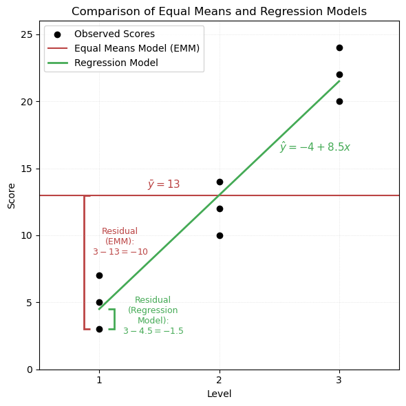
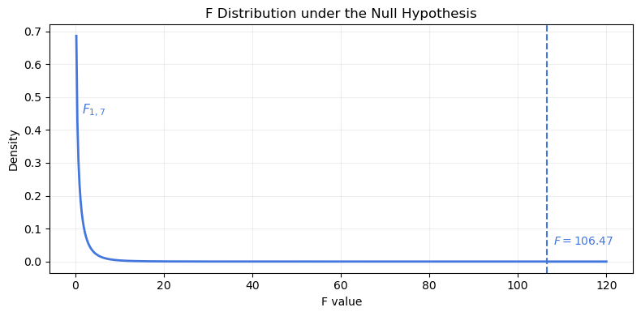
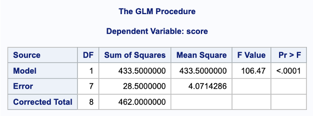
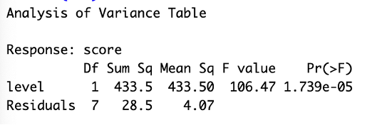
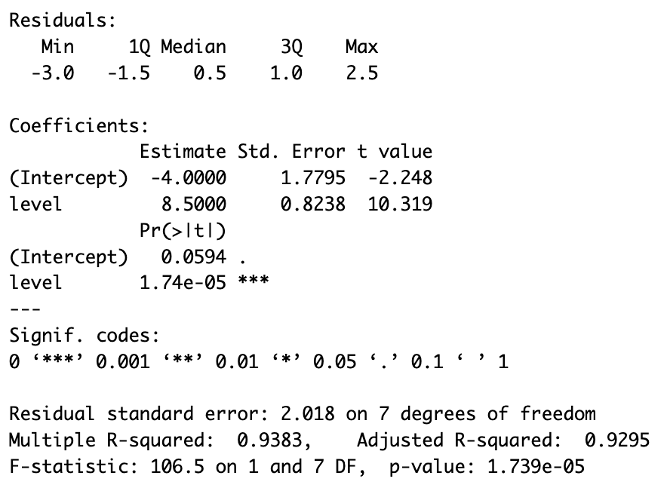
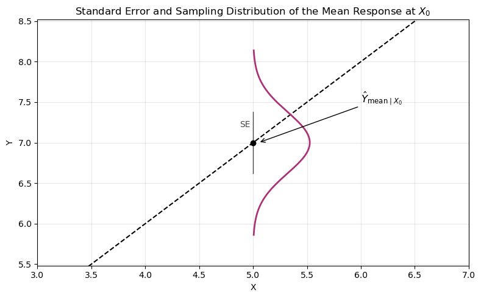
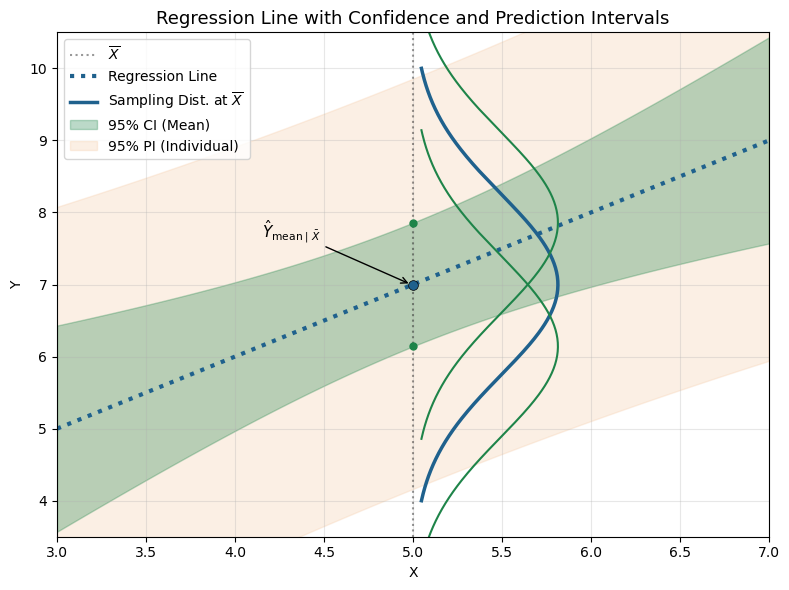
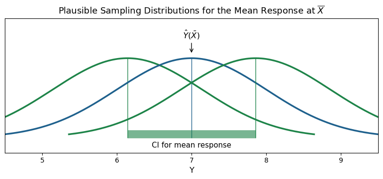

Code
proc glm data=ToyExample;
model score = level / solution;
run;| Level | Score 1 | Score 2 | Score 3 |
|---|---|---|---|
| 1 | 3 | 5 | 7 |
| 2 | 10 | 12 | 14 |
| 3 | 20 | 22 | 24 |
Sample size: \(n = 9\)
Fitting a linear model: \[ \text{Score} = -4 + 8.5 \cdot \text{Level} \]
The Equal Means Model (EMM) assumes a single grand mean across all groups:
\[ \bar{y} = 13 \]
We compute the squared deviations from the grand mean for each observation. These add up to the Total Sum of Squares (SST).
Equal Means Model: Squared Deviations from Grand Mean
| \(\textcolor{#BB4444}{\textbf{Level}}\) | \(\textcolor{#BB4444}{\textbf{Obs1}}\) | \(\textcolor{#BB4444}{\textbf{Obs2}}\) | \(\textcolor{#BB4444}{\textbf{Obs3}}\) |
|---|---|---|---|
| \(\textcolor{#BB4444}{1}\) | \(\textcolor{#BB4444}{(3 - 13)^2 = 100}\) | \(\textcolor{#BB4444}{(5 - 13)^2 = 64}\) | \(\textcolor{#BB4444}{(7 - 13)^2 = 36}\) |
| \(\textcolor{#BB4444}{2}\) | \(\textcolor{#BB4444}{(10 - 13)^2 = 9}\) | \(\textcolor{#BB4444}{(12 - 13)^2 = 1}\) | \(\textcolor{#BB4444}{(14 - 13)^2 = 1}\) |
| \(\textcolor{#BB4444}{3}\) | \(\textcolor{#BB4444}{(20 - 13)^2 = 49}\) | \(\textcolor{#BB4444}{(22 - 13)^2 = 81}\) | \(\textcolor{#BB4444}{(24 - 13)^2 = 121}\) |
\[ \text{SST} = \sum (y_i - \bar{y})^2 = \textcolor{#BB4444}{462} \]
We now compute residuals from the fitted regression model:
\[ \hat{y}_i = -4 + 8.5 \cdot x_i \]
Regression Model: Squared Residuals
| \(\textcolor{#44AA55}{\textbf{Level}}\) | \(\textcolor{#44AA55}{\textbf{Obs1}}\) | \(\textcolor{#44AA55}{\textbf{Obs2}}\) | \(\textcolor{#44AA55}{\textbf{Obs3}}\) |
|---|---|---|---|
| \(\textcolor{#44AA55}{1}\) | \(\textcolor{#44AA55}{(3 - 32.5)^2 = 6.25}\) | \(\textcolor{#44AA55}{(5 - 32.5)^2 = 20.25}\) | \(\textcolor{#44AA55}{(7 - 32.5)^2 = 56.25}\) |
| \(\textcolor{#44AA55}{2}\) | \(\textcolor{#44AA55}{(10 - 13)^2 = 9}\) | \(\textcolor{#44AA55}{(12 - 13)^2 = 1}\) | \(\textcolor{#44AA55}{(14 - 13)^2 = 1}\) |
| \(\textcolor{#44AA55}{3}\) | \(\textcolor{#44AA55}{(20 - 19.5)^2 = 0.25}\) | \(\textcolor{#44AA55}{(22 - 19.5)^2 = 6.25}\) | \(\textcolor{#44AA55}{(24 - 19.5)^2 = 20.25}\) |
\[ \text{SSE} = \sum (y_i - \hat{y}_i)^2 = \textcolor{#44AA55}{28.5} \]
ANOVA Table: Comparing Regression to Equal Means Model
| \(\textcolor{#4477DD}{\textbf{Source}}\) | \(\textcolor{#4477DD}{\textbf{df}}\) | \(\textcolor{#4477DD}{\textbf{SS}}\) | \(\textcolor{#4477DD}{\textbf{MS}}\) | \(\textcolor{#4477DD}{\textbf{F}}\) | \(\textcolor{#4477DD}{\mathit{p}\text{-value}}\) |
|---|---|---|---|---|---|
| \(\textcolor{#4477DD}{\text{Model}}\) | \(\textcolor{#4477DD}{1}\) | \(\textcolor{#4477DD}{433.5}\) | \(\textcolor{#4477DD}{433.5}\) | \(\textcolor{#4477DD}{106.47}\) | \(\textcolor{#4477DD}{< 0.0001}\) |
| \(\textcolor{#44AA55}{\text{Error}}\) | \(\textcolor{#44AA55}{7}\) | \(\textcolor{#44AA55}{28.5}\) | \(\textcolor{#AA9933}{4.07}\) | ||
| \(\textcolor{#BB4444}{\text{Total}}\) | \(\textcolor{#BB4444}{8}\) | \(\textcolor{#BB4444}{462}\) |
Note: The regression model estimates both a slope and an intercept, using 2 degrees of freedom. This reduces the error degrees of freedom from 8 (in the Equal Means Model) to 7:
\[ \text{df}_{\text{Error}} = n - 2 = 9 - 2 = 7 \]
The \(R^2\) value quantifies how much of the total variability in the response is explained by the regression model. It is based on the decomposition of total variability into two parts: variability explained by the model (SSR) and unexplained variability due to error (SSE):
\[ R^2 = \frac{\text{SSR}}{\text{SST}} = 1 - \frac{\text{SSE}}{\text{SST}} \] \[ R^2 = \frac{\textcolor{#4477DD}{433.5}}{\textcolor{#BB4444}{462}} = 1 - \frac{\textcolor{#44AA55}{28.5}}{\textcolor{#BB4444}{462}} = 0.938 \]
This means 93.8% of the variability in scores is explained by the regression model.
The error variance is measured by the Mean Squared Error (MSE), and the square root of MSE gives the Root Mean Squared Error (RMSE):
\[ \textcolor{#AA9933}{ \text{MSE} = 4.07 \quad \Rightarrow \quad \text{RMSE} = \hat{\sigma} \text{ of each } y \text{ distribution} = \sqrt{4.07} \approx 2.02 } \]


The F-test compares how much variability is explained by the regression model relative to unexplained error. A large value like \(F = 106.47\) indicates a significantly better fit than the Equal Means Model.
Because the p-value is less than 0.0001, we reject the null hypothesis that all group means are equal. The regression model explains a substantial proportion of the total variability in scores.
proc glm data=ToyExample;
model score = level / solution;
run;fit <- lm(score ~ level, data = anovaData)
anova(fit) # ANOVA table: sums of squares, F-stat
summary(fit) # Coefficient table, t-tests, R², F-stat


anova(fit) in R, both showing the F-statistic and p-value for the model. The lower R output from summary(fit) includes the regression coefficients, \(t\)-tests, \(R^2\), and overall F-test.
Regression models are used to predict response values given specific explanatory values.
There is uncertainty in the prediction due to sampling variability and model estimation error.
Do we want:
The regression line is modeling the mean of \(Y\) at values of \(X\).
Mean of \(Y\), given \(X_0\):
\[ \hat{Y}_{\text{mean} \mid X_0} = \hat{\beta}_0 + \hat{\beta}_1 X_0 \]
We want to know how confident we are that \(\hat{Y}\) is near the true \(Y\) value.
Standard error of the mean at \(X = X_0\):
\[ SE\left( \hat{Y}_{\text{mean} \mid X_0} \right) = \hat{\sigma} \sqrt{ \frac{1}{n} + \frac{(X_0 - \bar{X})^2}{(n - 1) S_X^2} } \]
where \(S_X^2\) is the sample variance of the explanatory variable \(X\).
As \(X_0 \to \bar{X}\):
\[ SE\left( \hat{Y}_{\text{mean} \mid X_0} \right) = SE\left( \bar{Y} \right) = \hat{\sigma} \sqrt{ \frac{1}{n} + 0} \]
See the Study Hours and Exam Grades example for a worked calculation of \(\bar{X}\), \(s_X^2\), and \(\hat{\sigma}\), which are used in computing \(SE\left( \hat{Y}_{\text{mean} \mid X_0} \right)\).

Confidence interval for the mean response:
\[ \text{CI} = \hat{Y} \pm t_{\alpha/2, n - 2} \cdot SE\left( \hat{Y}_{\text{mean} \mid X_0} \right) \]
The interval is wider for values of \(X_0\) that are farther from \(\bar{X}\).
Individual value of \(Y\), given \(X_0\):
\[ \text{Pred}\{Y \mid X_0\} = \hat{Y}_{\text{ind} \mid X_0} = \hat{\beta}_0 + \hat{\beta}_1 X_0 \]
This is the predicted mean response at \(X_0\), obtained from the regression line. To estimate how far an individual observation might deviate from the predicted value, we must account for uncertainty in both the regression model and the individual value.
Standard error for predicting an individual:
Combines uncertainty from estimating the mean (estimation error) and natural variability in individuals (random sampling error):
\[ SE\left( \hat{Y}_{\text{ind} \mid X_0} \right) = \hat{\sigma} \sqrt{ 1 + \frac{1}{n} + \frac{(X_0 - \bar{X})^2}{(n - 1) S_X^2} } \]
To highlight the two sources of uncertainty:
\[ SE\left( \hat{Y}_{\text{ind} \mid X_0} \right) = \hat{\sigma} \sqrt{ \underbrace{1}_{\text{individual variability}} + \underbrace{\frac{1}{n} + \frac{(X_0 - \bar{X})^2}{(n - 1) S_X^2}}_{\text{estimation uncertainty}} } \]
Note that the second term under the square root matches the formula for the standard error of the mean response at \(X_0\):
\[ SE\left( \hat{Y}_{\text{mean} \mid X_0} \right)^2 = \hat{\sigma}^2 \left( \frac{1}{n} + \frac{(X_0 - \bar{X})^2}{(n - 1) S_X^2} \right) \] Thus:
\[ SE\left( \hat{Y}_{\text{ind} \mid X_0} \right) = \hat{\sigma} \sqrt{\underbrace{1}_{\text{individual variability}} + \underbrace{\text{estimation variance}}_{\text{mean response}}} \]
Prediction interval:
\[ \text{PI} = \hat{Y}_{\text{ind}} \pm t_{\alpha/2, n - 2} \cdot SE\left( \hat{Y}_{\text{ind} \mid X_0} \right) \]
Prediction intervals are wider than confidence intervals because they include additional uncertainty for individual outcomes.
They are narrowest when \(X_0 = \bar{X}\) and widen as \(X_0\) moves farther from the sample mean.

Understanding the Confidence Interval:
See supplementary figure below for an illustration of how the confidence interval represents plausible sampling distributions of the mean response.

Rather than predicting \(y\) for a given \(x\), calibration estimates the \(x\) value that would produce a desired \(y\) (i.e., solve for \(x\) when \(y = y_0\)).
Prediction equation:
\[ \text{Pred}\{Y \mid X_0\} = \hat{Y}_{\text{ind} \mid X_0} = \hat{\beta}_0 + \hat{\beta}_1 X_0 \]
Calibration equation (solving for \(X_0\) given \(y_0\)):
\[ \hat{X} = \frac{y_0 - \hat{\beta}_0}{\hat{\beta}_1} \]
Given a desired outcome (e.g., a grade of \(y = 75\)), we can estimate the value of \(X\), the number of study hours that would produce it:
\[ \hat{X} = \frac{75 - 40.99}{6.71} = 5.07 \]
To construct a confidence interval for the mean \(X\), we treat this as an inverse prediction problem and quantify the uncertainty in the estimate of \(\hat{X}\).
Standard error of the calibration estimate:
\[ SE(\hat{X}) = \frac{SE\left( \hat{Y}_{\text{mean} \mid X_0} \right)}{|\hat{\beta}_1|} \]
Using:
Compute \(SE(\hat{X})\):
\[ SE(\hat{X}) = \frac{11.65}{|6.71|} \sqrt{ \frac{1}{13} + \frac{(5.07 - 3.92)^2}{(13 - 1) \cdot 5.74} } = \frac{11.65}{|6.71|} \cdot \sqrt{0.0889} = 0.538 \]
95% Confidence Interval for \(\hat{X}\):
Using \(t_{0.975, n-2} \approx 2.02\):
\[ \text{95% CI} = \hat{X} \pm t_{0.975, n-2} \cdot SE(\hat{X}) = 5.07 \pm 2.02 \cdot 0.538 = (3.983,\ 6.157) \]
Interpretation:
We are 95% confident that the number of study hours a student would need to earn a mean grade of 75 is in the interval (3.983, 6.157) hours.
Sometimes we want to predict the \(X\) value associated with a single observation that yields a specific \(y\).
We still estimate:
\[ \hat{X} = 5.07 \]
But the standard error includes an extra term for individual-level variation:
\[ SE\left( \hat{Y}_{\text{ind} \mid X_0} \right) = \hat{\sigma} \sqrt{ 1 + \frac{1}{n} + \frac{(X_0 - \bar{X})^2}{(n - 1) S_X^2} } \]
Then:
\[ SE(\hat{X}) = \frac{SE\left( \hat{Y}_{\text{ind} \mid X_0} \right)}{|\hat{\beta}_1|} \] This yields a wider interval than the confidence interval for the mean, because it reflects both model error and individual-level error.